Michael Tawa
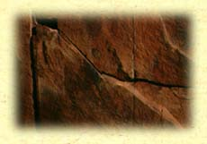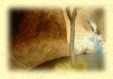 bodyThe body bids, bodes: awakens to what abides - to what, (embedded), resides and desires to speak - to whatever, of being, bodes. Speaking, (opening), full and flushed, it bellows: hollow, belly, womb; bower. Interior space, receptacle, habitation - the body places dwelling, harbours refuge. Separate, detached (distributed in parts) - the body localises interiority, and interiorises locality.(2)
Is the body a garden? A garden girt by yarns, made by speaking. Court, yard - cord, yarn; choir, chorus; khora. The space of the body - from which (in which, of which) it speaks - is a gaping (raw wound - cruel, bloody) yawn, cosmic abyss, orchard, field, house. An effortlessly opening and extending, containing and receiving envelope - but light; an organic vestment - a gossamer gown.(3)
The body is curvature: concavity, convexity. Covert, dug, its vault harbours, contains, secrets - arched-up, its vault, lofty, secretes. What? The expired corpse: a grave, closed to sense, shut. A crypt, an excavation: empty - (not as devoid but brimming) - yielding inexhaustible profusion. The body - exposed at its limits, at its (b)rim - bridges, joins, gathers.(4) What? The unsounded-sounded, the unmeasured-measured, the inner-outer.(5) The body matters: it "always weighs; it lets itself weigh, be weighed. It presses, it presses against other bodies, onto other bodies. All bodies weigh against one another.... This is not a matter of mechanics or gravity. Bodies weigh lightly. Their weight is the rising of their mass to their surface. Endlessly, the mass rises to the surface, and peels off as a surface."(6)
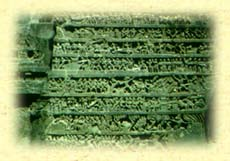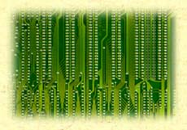 Between outside and inside, at the rim, and ambiguous border (where, also, an expulsion of the abject takes place(7)) - flesh swells and is leavened. Its swelling is a ferment, a yielding agreement: yes. What swells at the rim is the residue - a remainder: that portion over and above, the surplus. A supplement that is everything, that is the All: all-productive and all-liberating font, navel and nave, (origin and means), of arising measure.(8)
Somatic, the body is sound - which is to say saved, delivered, rescued; which is to say sane, sober, temperate: a sign of fellowship, a community of parts, a token of joint membership.(9) The body is never solitary - a lone body. Its somatology is a site of incarnation, of knowing - where gnosis takes place as a turning, which is ruination.(10) An effigy devoid of vitality: a carcass, fallen(11) - fallen around that ruination that turns on the suppleness of its articulated mobility, its arcuated force. (12)
The body is that breathed-upon and breathing: raised in being brought to resonance, to in-spired speech.(13) Its bony substance binds, strengthens, confirms. The body is tree, trunk, wooden spine: druidic oak. Elemental strength, it stands as aggregating power of increase and accumulation: matter in the process of working - matter making present its extensity, invasively; determined growing to the terms and the conditions of its terminality - through, into its limits. Is it (finished?, or) consummated in transcendence.(14)
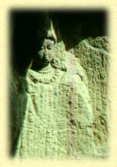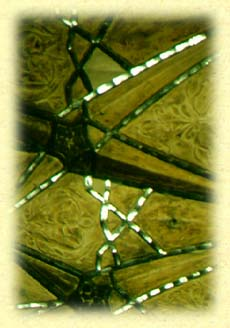 skyWhat of darkness and light? The darkness of creation(15) - from which God speaks out of the midst of the fire, the cloud, and the deep gloom - is a restraining obscurity. Withholding, refraining; a sparing of light - kept spare, kept as a supplement: over and above - which is to say in the readiness that attends to necessity. The withholding is an in-folding that weaves and plaits the purposed - that fabricates in light-withheld. This self-absorbing obscurity is ringed with fire: its complexion sparkles, scintillates, shimmers love; and its incandescent skin - skeined darkly and withheld - is a distending ardour of arcane fire. Darkness is the impossibility of circumscribing the transcendent: that stammering which is speech disposed to come to a stand-still before the immanent and the inexpressible - and yet cannot-not speak.(16)
Likewise, the darkness in which God dwells(17) - shade, shadow and terrifying mark(18) - is a gloom attending a lowering sky thick with inclining clouds. This darkness, which is absolute lack - which is utter blindness and privation - is ringed by fire, and lightning: the passion of internal ardour striking the obscurity and cryptic concealment of matter. (19) This sheer darkness shines. (20)
Night is not; a knot - naught. But also a node - a mark or notch by which something is named, made known; by which something is brought to notice and mapped - by which it is knitted, bound and fastened - by which it escapes no-thingness. The node is a locus of motion without term: a pulsation barely held from desegregation. Its escape is its turning into itself - an indefinitely prolonged intension even as it distends without term: in which nocturnal conjunction, expansion and contraction tend and incline to adherence.(21)
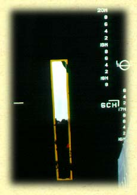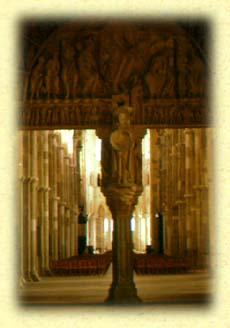 Light is produced in this lack that is excess - this desire delivered to intrinsic ardour as sign of convertibility: being/non-being, the being-in-act - the Irreparable.(22) It's lustration is lucid - but also lunatic, luciferian (creation is the given as loss, as gift). It's ligation - its ligneous function - is ornamentation. It legislates the ligatures and adornment of order: gleaming seams and sutures, (adoring), sounding: Logos, Fiat Lux.(23)
The sun rays its self-consumption. Its shimmer is duplicitous: it re-pleats and doubles. On a scintillating boundary that is the name-made-known - that is begotten resonance brought-forth through absolute darkness, and resounding - that shimmer stammers.(24)
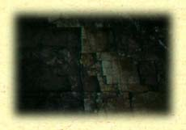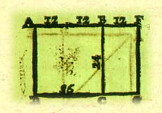 (scale)A ladder links and distends the separate. Lesion and release. (What is lost in giving? - given in loss?) Proportion is all that - relationally - increases, extends, escalates: all that arises to the surface, as surface. To scale is to cut - to cleave, section-apart, differentiate, discriminate - to shed. A shedding is a peeling-off: to shear and shave, to scrape (back again) - to reveal the segmented: a shorn scarp (or scalp) one scales - scanned and skinned. Skin is touch(25) - and touch is the sensibility of community: its inclining and weighing-upon itself.(26) Skin shades and shelters: a shining sky, obscuring. Skin harbours the furrowed - where matter is cooked and hewn crooked - where matter skews hollow and curved: a bowl for weighing and measuring, a curved shell, a firmamental canopy.(27)
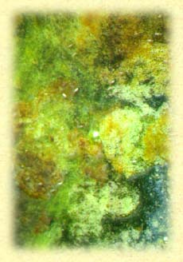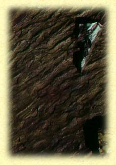 matterMatter is riddled with stresses, streaks, strains. It maps sites of slippage, swelling, constriction, tenuousness. We name these fault lines because we privilege the seamless. These seams of matter, these sites of frailty, of weakness - where it is unstrung, where it surrenders - heave open to a gleaming of the incandescent.
Matter is (archaically) woody: a ligneous matrix. It prostrates and fields a plane prepared for deployment: for measure to be meted-out, modulated, mediated.(28) Measure is properly extension: the divided as intervaled-apart - as difference twice-voided within the midst and schism of the same. This stretched interval renders the homogenous void - and in that violation, nullifies it and negates it from within.
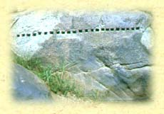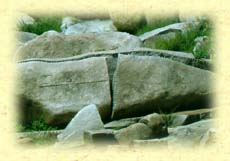 What is made room for in this partedness is a vesical matrix in which mind means to become as labyrinthine deployment(29): as the impulse of matter willing to rise-forth in multiplicity.(30) The matrix be-holds mensuration as fluid power - as an agitation marking passage to satiation at the term(31), to a terminal trespass that is abundance in abandonment.(32)
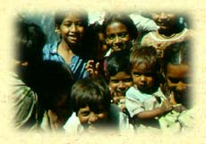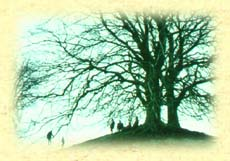 placePlace is a standing: a locality that wells-forth and arises, abiding as performance - as the state and stature of an ordination, accomplished and set-up. Place consists of what subsists as issuing-forth, as taking-place and springing into placedness. It is matter substantialised and brought to consolidated persistence: the collective measuring-forth and interlacing of indefinitely extensive matter.(33) Place is peopled, occupied, claimed and given to opportunity. (34) Inhabited and shadowing dwelling, exposed, its tracts track the coming-to-be and the taking-place of whatever-being, here and now. (35)
On the one hand a sedative: sinking to rest, subsiding, sedimentation. To site is to settle (a quarrel), to make peace, to reconcile to a satisfactory state. On the other a sedition: scattering, sowing apart, a seeding, a seduction. The seat (the throne) is a trap.(36)
To stand is to stand-fast, to be placed and to have a place. To stand placed is to remain in good stead, settled; but also in-stead, instead-of, in the place of community. This standing is a steership. That which stands fast is a stowage. Steering, the rudder stands pivotal, tracking firm course. What is stowed is the unfurling, (like a shuttle infiltrating a standing warp), which, in that coursing, constructs and restores the steadfastness of place and the placedness of community.(37)
To set a place is to make room for; to settle and set-forth a dwelling - a coming-to-be-here and a coming-to-be-now fit for whoever happens to stand in the midst. To place is to set-forth in community. To set a place is to settle from out of a wandering. This settling is not down, in inertia - but about, in community. Fixed, not in location - but in intention. The place assigned ("prepared for you from the foundation of the world"(38)), this assisted settling, is a setting in place assigned to a founding: to a laying hold that yields, a seizing of the only sufficiency - the satiation: the what-is-enough. That portion appointed as provision, as stowage, asset, standing reserve(39). To settle is be seated and to sit at table - at or near - to sit beside another, within community.
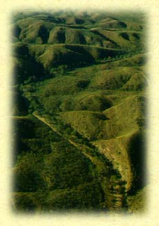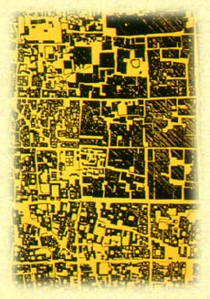 polisThe city is community, summoned and hastened to citizenship. Citizenship is dwelling as a waking or a watch. The urbane is one who watches, who remains open - one bare and exposed. What to? To a surveillance that watches-over and surveys. Neither disengaged nor panoptic, but an attending to the dwelling and rising-up of community. Not rising up in revolt as a directed-elsewhere, but a suffusing emergence of that watching that wakes over the exposed.(40)
To attend to is to lean towards, to incline, to desire, to tend. That which is attended to watchfully is given corporately to community. What is done together gathers and opens community to that attentiveness - to that attending to what comes, to what enters in. This waking is a giving way - a surrender. It attends to an increase in which what comes grows and is witnessed waxing. This watching builds. It lights-upon - and in that brings-about or forth, brings near-to or approaches, the there-in of a neighbourhood - not only a near-dweller(41) but also a nigh-dweller: a kinsfolk whose dwelling is nigh; as impending or up-coming(42) - as an effortless dwelling in the waking in which something is wrought.
Citizenship is polity: attending to conversation, to engagement, to the condition of exchange and discourse - to the agonic that is game and warfare.(43) The city is community exposed. It's skin is that of surveillance. The city (graven and engraved; penetrant cold(44) ) incites a watching that wakes over the adversary - with hostilities, with warfare never far. The city pollulates. Its plurality is surfeit, fullness: pleroma.(45) The city pollutes - its surface is filth, putrid and foul. Its over-muchness is decay, desegregation and rot.(46) Paddled into confusion and promiscuity - pillaged and pell-mell - it stinks.(47)
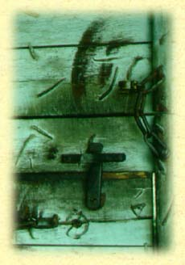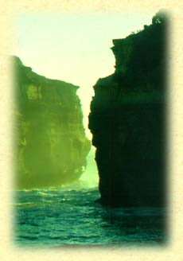 On this watching, community is hinged and unhinged: in motion - as motion around the poles, fastened - it is driven, pulsing. As driven, it is flayed and exposed raw - dilapidated - its pelt, peeled, glints.(48) Pollinating, it pulverises - pinched and pounded like fine flour, sifted meal, chaff - pallid and beyond the pale, scraped-back again, grey and appalling: a palimpsest. A palisade stakes it out and forecloses territory - the palings impale and stake its limits(49) ; always at stake and staked on the watching that unhinges - that skins and exposes it at the rim, at the boundary: this limit that is a gate kept and surveyed by community.(50)
Michael Tawa
Sydney, July 1995 Michael Tawa is an architect and senior lecturer in architecture at the School of Architecture, University of NSW, where he teaches design theory, architectural design and technology. A Doctorate (1991) on the relationships between music and architecture using Pythagorean, Platonic and Vedic sources, led to an ongoing interest in hermeneutics. He is now working on notions of mapping and their implications for design practice.